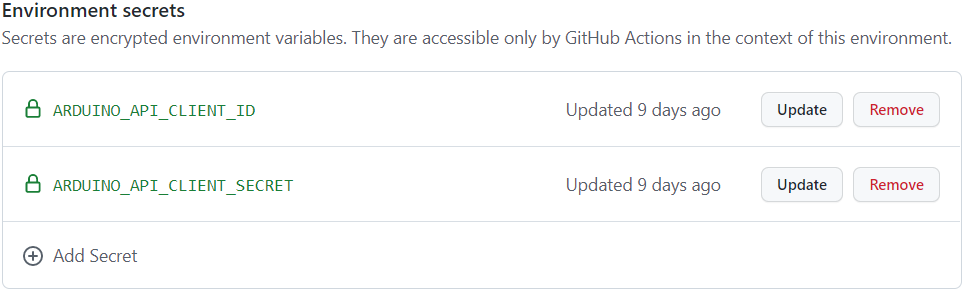

Using R to visualize Arduino-iot weather sensor data
Last updated: 2022-10-03
Checks: 6 1
Knit directory: Rduinoiot-analysis/
This reproducible R Markdown analysis was created with workflowr (version 1.7.0). The Checks tab describes the reproducibility checks that were applied when the results were created. The Past versions tab lists the development history.
The R Markdown file has unstaged changes. To know which version of the R Markdown file created these results, you’ll want to first commit it to the Git repo. If you’re still working on the analysis, you can ignore this warning. When you’re finished, you can run wflow_publish to commit the R Markdown file and build the HTML.
Great job! The global environment was empty. Objects defined in the global environment can affect the analysis in your R Markdown file in unknown ways. For reproduciblity it’s best to always run the code in an empty environment.
The command set.seed(20220923) was run prior to running the code in the R Markdown file. Setting a seed ensures that any results that rely on randomness, e.g. subsampling or permutations, are reproducible.
Great job! Recording the operating system, R version, and package versions is critical for reproducibility.
Nice! There were no cached chunks for this analysis, so you can be confident that you successfully produced the results during this run.
Great job! Using relative paths to the files within your workflowr project makes it easier to run your code on other machines.
Great! You are using Git for version control. Tracking code development and connecting the code version to the results is critical for reproducibility.
The results in this page were generated with repository version 69e0fa6. See the Past versions tab to see a history of the changes made to the R Markdown and HTML files.
Note that you need to be careful to ensure that all relevant files for the analysis have been committed to Git prior to generating the results (you can use wflow_publish or wflow_git_commit). workflowr only checks the R Markdown file, but you know if there are other scripts or data files that it depends on. Below is the status of the Git repository when the results were generated:
Ignored files:
Ignored: .Rhistory
Ignored: .Rproj.user/
Unstaged changes:
Modified: analysis/index.Rmd
Note that any generated files, e.g. HTML, png, CSS, etc., are not included in this status report because it is ok for generated content to have uncommitted changes.
These are the previous versions of the repository in which changes were made to the R Markdown (analysis/index.Rmd) and HTML (docs/index.html) files. If you’ve configured a remote Git repository (see ?wflow_git_remote), click on the hyperlinks in the table below to view the files as they were in that past version.
| File | Version | Author | Date | Message |
|---|---|---|---|---|
| html | 1bf0eba | FlavioLeccese92 | 2022-10-02 | Build site. |
| Rmd | d00239e | FlavioLeccese92 | 2022-10-02 | wflow_publish(“analysis/index.Rmd”) |
| html | c0ec671 | FlavioLeccese92 | 2022-09-30 | Build site. |
| Rmd | 98f9bfc | FlavioLeccese92 | 2022-09-30 | environment-setup |
| html | 3e4ed7a | FlavioLeccese92 | 2022-09-30 | Build site. |
| Rmd | a3cf2de | FlavioLeccese92 | 2022-09-30 | wflow_publish(c(“analysis/index.Rmd”, “dashboard/weather-report.Rmd”)) |
| html | e397546 | FlavioLeccese92 | 2022-09-30 | Build site. |
| Rmd | e86011b | FlavioLeccese92 | 2022-09-30 | index schema |
| html | e86011b | FlavioLeccese92 | 2022-09-30 | index schema |
| html | f8456f2 | FlavioLeccese92 | 2022-09-27 | push |
| html | a729819 | FlavioLeccese92 | 2022-09-25 | rearrange site |
| html | 2f3dcbb | FlavioLeccese92 | 2022-09-25 | test |
| html | 50dcd8c | FlavioLeccese92 | 2022-09-24 | index.html update |
| html | 71b5efd | FlavioLeccese92 | 2022-09-24 | Build site. |
| Rmd | e44daf0 | FlavioLeccese92 | 2022-09-24 | Publish the initial files for myproject |
| Rmd | e1dee4f | FlavioLeccese92 | 2022-09-24 | commit new index |
| html | e1dee4f | FlavioLeccese92 | 2022-09-24 | commit new index |
| Rmd | 9a79767 | FlavioLeccese92 | 2022-09-24 | merge |
| Rmd | 555d36a | FlavioLeccese92 | 2022-09-24 | the first commit |
| html | 555d36a | FlavioLeccese92 | 2022-09-24 | the first commit |
Motivation
I have always been fascinated by the potential of open-source tools interaction, among which R (long live R!) and lately Arduino.
For those who don’t know, Arduino is an open-source hardware and software company which designs and produces microcontroller kits for the deployment of digital services, both at a professional, hobby and educational level. Furthermore, the community is very active and smart.
Here you can find many projects, including Home Automation, Robotics and even more.

To me as a data scientist with a statistical background, electronics is a black box, for this reason I chose to a 99% plug-and-play solution: Arduino Oplà IoT Kit.
If you want to know more, here’s a video introducing you the kit:
The kit comes with 4 integrated sensor measuring Humidity, Pressure, Temperature and Light.
Starting to collect data from these sensor is very simple: you just need to deploy an appropriate sketch to the mother board, which can be done through the dedicated IDE or a guided procedure.
Once everything is set up, you will have data flowing from sensors to the cloud and visibile via a dashboard hosted on Arduino Cloud, free for 12 months with the kit purchase. Here you can access mine to have an idea.
Data are stored into a cloud database and retrival of data is possible throught an API which can be queried, guess what…
R!
Goal
The goal of the project is to deploy a dashboard on github which shows Arduino sensor data and it is updated every 15 minutes. Documentation (and this very document you are reading) must automatically versionised at every commit and every version easily accessible. Every software used must be for free.
Project setup
The R ecosystem is constantly growing, adding new amazing productive tools such as Workflowr and Flexdashboard, which perfectly exploit Github actions in order to automatize their scope.
Furthermore, in order to make it easier to access Arduino Iot Cloud API , I developed an R package through pkgdown. The package is called Rduinoiot and can be found on CRAN.

Workflowr
Workflowr is an R package that supports you in creating an organized, reproducible and shareable project on Github or Gitlab.
Practically speaking, when opening RStudio to start a new project, if you have Worflowr installed, you will see a new option. By chosing it, you are creating automatically a git-versioned project with organized subdirectories.
To tell Worflowr which git account to use, run the function:
wflow_git_config(user.name = "Full Name", user.email = "email@domain")Then you can create rmarkdown analyses and make them accessible by a customizable website hosted for free on Github or Gitlab.
The two type of files relevant for a workflowr site are *.Rmds and _site.yml.
Analysis files *.Rmd
Any type of rmarkdown file can be added to your site. Only restriction, of course, is that your files cannot be shiny markdowns since they need a server to process live user interactions and in our setup we do not have it, so avoid runtime: shiny. Rmarkdown files are static html and usually not optimal for reporting analysis of data which require frequent updates. Additionally, for my porpuse an ordinary markdown would not have satisfied my graphical obsession.
For these two reasons, I decided to go with flexdashboard (to obtain a catchy but static report) + github actions (to update the static HTML with new data every 15 minutes). But we will talk about it later in this document.
The most important part of the rmarkdown is the header, which will be automatically generated by workflowr and is customizable:
---
title: "Using R to visualize Arduino-iot weather sensor data"
site: workflowr::wflow_site
output:
workflowr::wflow_html:
toc: true
toc_float: yes
theme: flatly
highlight: textmate
css: style.css
editor_options:
chunk_output_type: console
---Analysis files *.Rmd need to be stored under analysis/ folder.
Once you are done with your analysis, you can build your site locally:
wflow_build()If not specified, workflowr will add to the local site each of your analysis in the analysis/ folder.
Then, if you are ready to put it online, simply choose which analysis you want to publish and run the following:
wflow_publish(c("analysis/index.Rmd", "analysis/license.Rmd"))This creates a commit and at the next push git will trigger the action to build the site.
The last step to have our site online is to go on our Git (in this case, Github) project, go to Settings > Pages and under Source, select Deploy from branch. Then select main and as a folder /docs and save.
Structure site file _site.yml
The design of the site which will host analysis is defined by the _site.yml.
The most important things you can customize are the theme, the navigation bar, which analysis has to be shown and where (and any HTML file too) and the footer. Here you can find more information.
While I am writing this document, the _site.yml of this site is the following:
name: "Rduinoiot-analysis"
output_dir: ../docs
navbar:
title: "Rduinoiot-analysis"
left:
- text: Home
href: index.html
- text: Weather report
href: weather-report.html
- text: License
href: license.html
output:
workflowr::wflow_html:
toc: true
toc_float: yes
theme: flatly
highlight: textmate
css: style.css
editor_options:
chunk_output_type: consoleA style.css file is stored under subdirectory /docs for additional graphical customization.
Flexdashboard
Flexdashboard is an R package which allows to easily develop dashboards as you were writing a simple rmarkdown document.
I confess that I always had prefered Shiny apps for their interactivity, but they require a server and the graphical needs of my app exceeded the RAM constraint of shinyapps.io free plan.
However, even if not real time and without user interaction, refreshing the flexdashboard with new data driven by free github actions did the trick. Furthermore, having analysis together with documentation in a workflowr site seemed pretty cool.

As usual, creating a flexdashboard is straight-forward: if you have the package installed, in Rstudio choose new R Markdown… > From template > Flex dashboard. Again, the header is very important and you will note that, when comparing with the workflowr earlied showed, you will see:
---
...
output:
flexdashboard::flex_dashboard:
...
---You can customize this dashboard seemengly to the common rmarkdown documents. If you want to have an idea, give a look at the file which generates the Weather report analysis from my Arduino’s sensors. The file is stored under subdirectory /dashboard.
Github actions
The last piece we need to get everything working is to automatize our scripts, in order to have the dashboard updated every 15 minutes with fresh new data from Arduino. In order to do that, we use Github actions!
We would want to automatize two jobs:
1. refresh-data.R
As you expect, this R script is in charge of getting new data from Arduino. It reads the old data and starting from the most recent data timestamp loop over sensors until current time. Then it overwrites the old dataset with a new .rds under the subdirectory /data.
2. deploy-dashboard.R
This other R script makes sure that a new flexdashboard is created and moved under the subdirectory docs where workflowr site is built. In doing that we are mapping the dashboard right inside the documentation site!
library(rmarkdown)
render("dashboard/weather-report.Rmd")
file.rename("dashboard/weather-report.html", "docs/weather-report.html")Both files are stored under the subdirectory /jobs.
Next development: Embed a flexdashboard document inside a workflowr analysis. In doing that we would have a versioned dashboard which can be useful in some situation.
OK. But how do we automatize these scripts? Once again, we have to define a proper .yml file.
3. schedule-commit.yaml
First of all I decided to place the file under the subdirectory .github/workflows in case I needed to trigger more actions in the future.
Set up API secrets
An essential and preliminary step is to set up ARDUINO_API_CLIENT_ID and ARDUINO_API_CLIENT_SECRET, so that Rduinoiot package will be able to retrieve the data through the API. Since we want them to be secret, we cannot send them together with the refresh-data.R script.
Github allow us to define environments where the jobs will run and inside these environments we can define the so called secrets. For doing that, go to Settings > Environments > New Environment, chose a name for your environment and click Configure environment. Scrolling down the configuration page you will see:
Then you need to choose a name for your secret and fill in the value. Once you have done, going to Settings > Environments you will see your new environment with 2 secrets.

We will now see separately each part of the .yml file but Here you can find the full script.
- We give a name to the action and we tell
github actionswhen the script needs to run. In this case we scheduled every 15 minutes but also we want it to run every time a new push occurs on main branch, so we will make sure to have a potential quick failure after changes.
name: rduinoiot-jobs
on:
schedule:
- cron: "*/15 * * * *"
push:
branches:
- main- We define our jobs. In our case, a single job named refresh-data (with 2
Rscripts). We tell Github to run the job on a macos system and on the environment called rduinoiot-jobs-environment on Github. This is very important
jobs:
refresh-data:
# The type of runner that the job will run on
runs-on: macos-latest
environment: rduinoiot-jobs-environment
# Load repo and install R
steps:
- uses: actions/checkout@master
- uses: r-lib/actions/setup-r@master
sessionInfo()R version 4.1.0 (2021-05-18)
Platform: x86_64-w64-mingw32/x64 (64-bit)
Running under: Windows 10 x64 (build 19044)
Matrix products: default
locale:
[1] LC_COLLATE=English_United States.1252
[2] LC_CTYPE=English_United States.1252
[3] LC_MONETARY=English_United States.1252
[4] LC_NUMERIC=C
[5] LC_TIME=English_United States.1252
attached base packages:
[1] stats graphics grDevices utils datasets methods base
loaded via a namespace (and not attached):
[1] Rcpp_1.0.9 rstudioapi_0.13 whisker_0.4 knitr_1.37
[5] magrittr_2.0.3 workflowr_1.7.0 R6_2.5.1 rlang_1.0.5
[9] fastmap_1.1.0 fansi_1.0.3 stringr_1.4.0 tools_4.1.0
[13] xfun_0.30 utf8_1.2.2 cli_3.4.0 git2r_0.30.1
[17] jquerylib_0.1.4 htmltools_0.5.3 rprojroot_2.0.2 yaml_2.3.5
[21] digest_0.6.29 tibble_3.1.8 lifecycle_1.0.2 later_1.3.0
[25] sass_0.4.2 vctrs_0.4.1 promises_1.2.0.1 fs_1.5.2
[29] cachem_1.0.6 glue_1.6.2 evaluate_0.15 rmarkdown_2.13
[33] stringi_1.7.6 bslib_0.4.0 compiler_4.1.0 pillar_1.8.1
[37] jsonlite_1.8.0 httpuv_1.6.6 pkgconfig_2.0.3